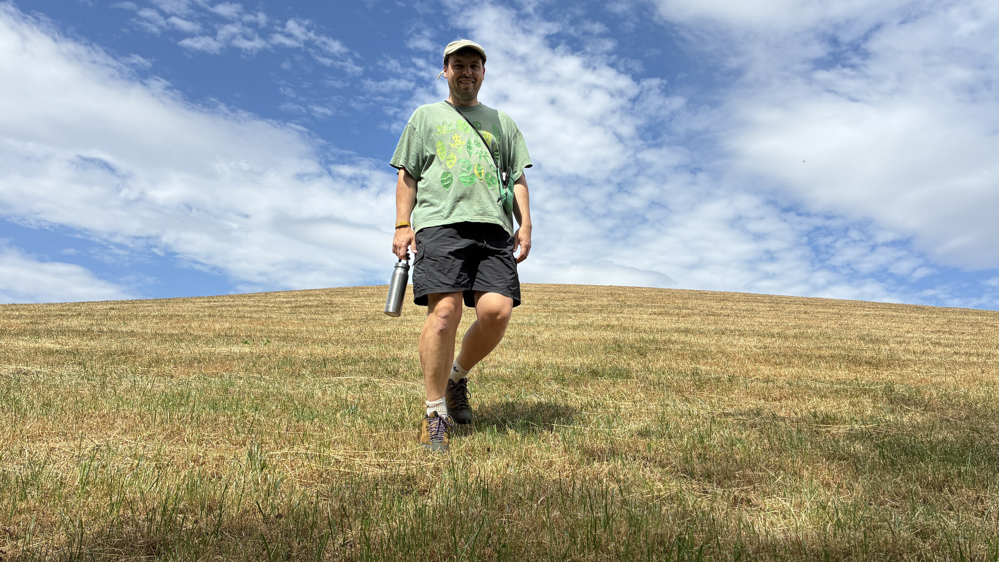

Gary-Martin (he/they) is an artist, designer, and educator based in Y Fenni. He is interested in systems of production and consumption, and their ecological entanglement. His work spans participatory art, speculative tools, and new musical interfaces, and has included projects with Cadw, The King’s Trust, Shakespeare’s Globe, and Tate Britain. He is a member of pyka, resident at Pervasive Media Studio, and a lecturer at the University of Gloucestershire, where his teaching focuses on critical practice in relation to networked cultures and political ecology.
